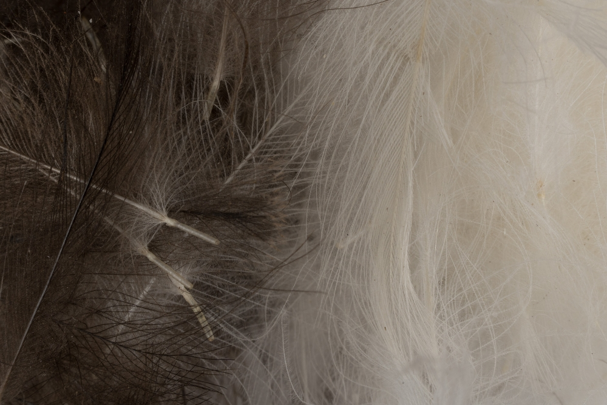
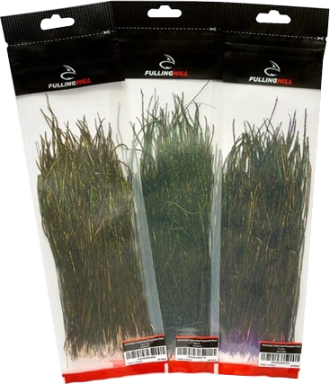
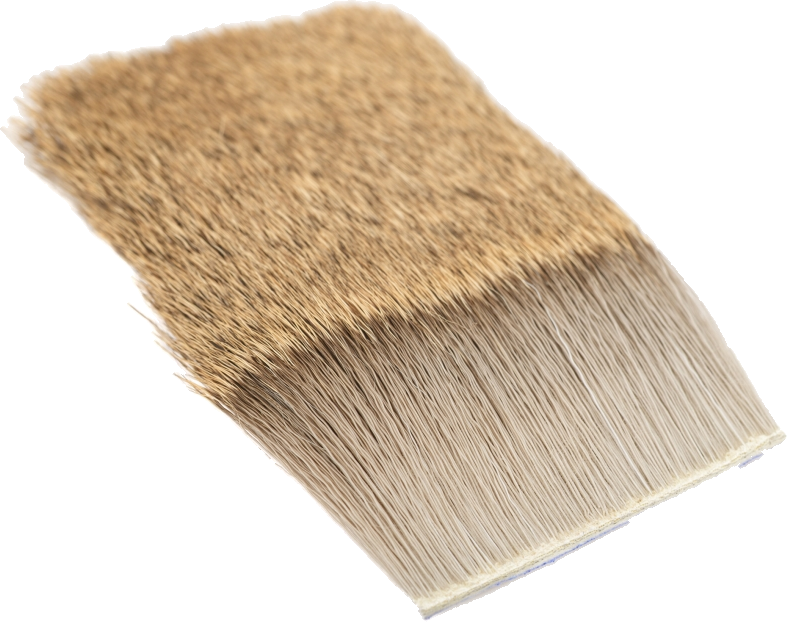
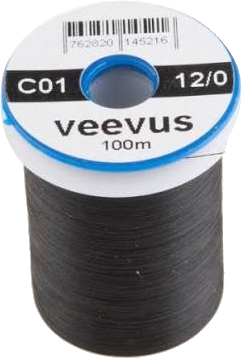
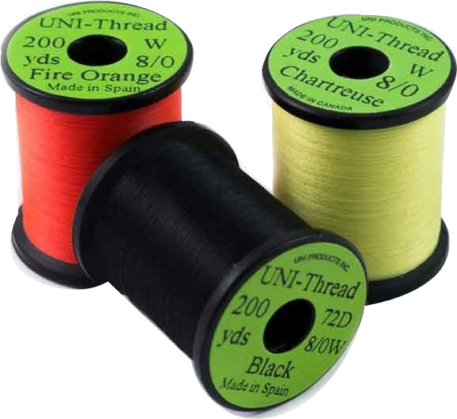

Danica Cam Vise ↗
Med bordfot og klemme.
Trøndersk Fluefiskesenter 1 390 krUtstyr og materialer til å binde egne fluer. Hver ting kan kjøpes separat.
Jeg ønsker én av hver, inkludert begge trådfargene og én pakke kroker i hver størrelse.
Bindestikke og verktøy til å holde kroken og feste materialene.
Til kropper, haler og vinger på tørrfluer og nymfer. Tråden holder delene sammen.

12 farger i én boks.
Trøndersk Fluefiskesenter 399 kr
Naturgrå · 0,5 g.
Trøndersk Fluefiskesenter 65 kr
Velg natural.
Trøndersk Fluefiskesenter 69 kr
Natural · 2 g.
Trøndersk Fluefiskesenter 69 kr
Velg natural.
Trøndersk Fluefiskesenter 149 kr
Black · 100 m.
Trøndersk Fluefiskesenter 35 kr
Olive · 50 yards.
Gero Sportsfiske 39 krTørrfluekroker fra Gero. Én pakke i hver størrelse: 12, 14 og 16.